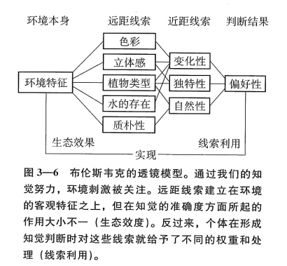
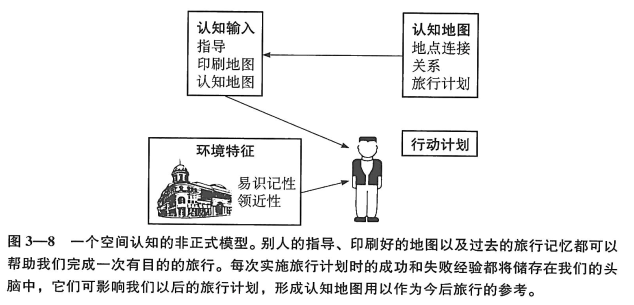
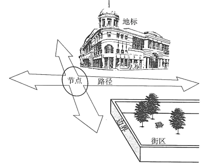

环境知觉和环境认知¶
尽管感觉的生理过程建立在可观察的生理过程和事件基础上，但不可否认，我们所看到的这个“眼前”世界也包含着从个体经验和记忆中提取出的种种因素。
有时我们并不主动借助视觉、听觉、嗅觉来感知周围环境，而是通过内心来体验它。我们既可以获得关于周围环境的事实和认识，同时还可记住通过经验习得对周围环境的情感反应。研究者们把这种想象和思考空间世界的能力称之为环境认知（environmental cognition）。
环境知觉的特征¶
在探讨一系列与环境相关的问题时，我们应有一个基本认识：人类在有意无意地改造环境，同时也不可避免被环境所改造。
几乎在所有场合下，人类的行为都会受到人与环境交互作用的影响————这种影响既源于我们所感知的客观世界，同时又受我们自身已有经验的影响。
心理学界对搜集外界环境刺激和解释外界环境刺激这两个过程做过区分：
-
感觉（sensation）被界定为：人类感官系统对一个声音或一束光线等简单刺激进行反应时所产生的相对简单的活动。
-
知觉（perception）直接指向一个更为复杂的过程，它蕴涵着人们对日常生活中更复杂且更有意义的环境刺激信息进行加工、整合和解释。
对我们人类来说，环境中有着各种丰富的刺激。事实上，环境所包含的信息远不是人类的理解力所能穷尽的，因此我们永远只能有选择地加工其中的部分信息。
我们其实是在寻求特定可理解水平的信息。
知觉过程还包含人类自身的活动。我们对环境抱有期望，从环境中体会经验、了解环境的价值和设定改变环境的目标，而环境则不断为我们的活动提供信息。这些活动中：
-
一部分是在环境中进行简单的探索以便自我定位
-
另一部分是制定行动策略以利用环境为我们的需要和目标服务；
-
还有一部分与在环境中建立信息和安全感有关，社会、文化因素、性别、社会经济地位、现代社会体系势必会影响到我们所了解或体验的东西
环境知觉的分析方法¶
大小知觉、深度知觉和距离知觉的传统研究方法¶
传统的实验室研究关注的是客体知觉（object perception），指用来检索我们的记忆并识别以前接触过的不同客体的感觉模式。
我们对环境知觉的了解，大部分还是来自传统的知觉理论，例如线条透视（line perspective），强制透视（forced perspective）是线条透视原理在三维空间的有趣运用，例如迪士尼中的建筑。
整体分析法¶
强调环境刺激间的复杂交互作用和感受者的个性特征，且其个性特征最终成为所体验环境的一部分。
系统不能被分割为相互独立的成分或相互离散的关系，感受到的环境可被认为是一个当下事件，其中的成分处于相互结合的状态，孤立地讨论其中的任何一个成分都毫无意义。
格式塔心理学¶
格式塔心理学试图阐明一条规律：我们如何把小的部分组织成一个大的整体，以及为什么物体的有些部分会成为我们的注意对象 ，有些部分则成为知觉的背景。
简明性原则¶
当视野范围内有模棱两可的对象出现时，知觉者会把它感知为与其所获得的信息相一致的简单图形。
格式塔心理学可能是20世纪对设计师最有影响力的理论。
先天论与学习论¶
布伦斯韦克的概率理论（透镜模型 lens model）¶
该理论把知觉过程类比为一个透镜，外界的环境刺激通过我们的知觉努力在透镜处被聚焦与知觉。
外界刺激分为：
-
远距刺激：输入的感觉模式的来源
-
近距刺激：光线投射在观察者视网膜上的一种实际反应模式。包含大量错综复杂的信息，其中既有关于感觉世界实质的一些冗余信息，也有模棱两可的东西。

每一个来源于环境中的刺激，都会因其在形成精确知觉时所产生的作用大小而占有不同的比例。
不仅环境刺激的客观价值不同，不同的个体由于各自的经验、性格或其他方面的差异而对这些刺激作用的评价也不同。
环境的生态知觉¶
机能主义（functionalism）：引起我们注意的事物，往往是那些对作为人类成员的我们来说是很重要的东西，也许主要是因为它们有利于我们生存下去。
根据这一观点，与周围环境和谐相处的需要影响着我们的知觉。例如，我们会把现在的感觉与自己以前的感觉相比较，目的是为了辨别现在的刺激信号对我们来说意味的是危险、食物，还是居所。
生态知觉理论（ecologial perception）：环境知觉是直接的，无须经过大脑高级中枢的复杂加工就可以直接传导很多信息。知觉具有整体性。
可供性知觉¶
在有机体的积极探索过程中，物体所表现出的稳定的机能属性被称作“可供性（affordances，可供生物利用的性质）”。
可供性涉及与环境的生态功能有关的知觉。对环境的可供性知觉实际上就是，感知个体如何与周围环境产生交互作用。通过可供性知觉，有机体可以找到自己的生态小环境。
适应性和对变化的知觉¶
知觉习惯化或知觉适应¶
如果有一个刺激是恒定的，通常我们对它的反应会变得越来越弱。
- 习惯化涉及是生理过程，强调当刺激反复出现时，感受器对其不太敏感。
- 适应侧重认知过程，认为当刺激反复出现时，我们对其不太关注。
适应并非总能成功消除不愉快的环境刺激。如果这些刺激实在令人不愉快，它可能被知觉成为令人烦恼的。即使是成功的适应也会动用我们的生理和认知资源，甚至有可能最终导致压力障碍。
影响适应的一个重要因素是刺激的可预见性或规律性。有规律或可预见的刺激要比杂乱无章的刺激容易适应些，可预见性是适应过程中的一个重要因素。
对变化的知觉¶
能否对新旧刺激之间的差异有所觉察，是以刺激变化（增加或减少）的强度为基础，新刺激的强度要与原有的刺激强度成一定比例。
觉察一个低强度刺激的改变只需要提供一个很小的强度变化，觉察高强度刺激的变化则需要给予一个大的强度变化。这个功能适用于各种形式的刺激。
无论何时，当我们被要求改变自己的生活方式以保护环境时，我们都会有所排斥。但如果要求我们改变的生活方式只是一些很小的地方，甚至小到难以引起注意，这样也许会乐意去做些改变。
快速的变化要比缓慢的转变更容易被人觉察。
环境认知概述¶
-
一个空间认知的非正式模型
- 认知地图（cognitive map）*:一个对自然环境中的空间格局进行部分表征的心理结构。
- 认知地图更具概括性，是不完整的、变形的、简化的以及具有个人风格的特点
- 由三个成分所构成
- 地点
- 空间
- 旅行计划

非正式模型：从一个地方到另一个地方的移动实际上是空间认知的主要目标。我们会在出发前制订一个行动计划，我们的计划需要一些相关地点的相对位置的信息。无论在缺乏识别标志的环境中，还是在珍上很熟悉的环境中，我们都会参考自己记忆和认知地图中的空间表征。我们会把认知地图作为自己构建计划的一个信息源，但地图本身的获得是以前在环境中习得经验的结果。
- 认知地图（cognitive map）*:一个对自然环境中的空间格局进行部分表征的心理结构。
-
认知地图
-
认知地图的发展历史
- 林奇城市意象说
《城市意象》，城市设计师，对认知地图研究中比较经典的研究著作。
-
认知地图的成分
- 路径：公用交通通道（街道、人行道或河道）
- 地标：具有突出特征的参照点
- 边界：线性界线（海岸线或墙）
- 街区：比较大的区域
- 节点：行动的核心点

-
认知地图目前观点
一个人所形成的认知地图代表了他（她）对其所在的环境的一种个人理解。
认知地图具有个体经验差异的特点。
易识记性会影响认知地图的形成。
-
认知地图的研究方法
常见的研究方法有：
-
草图
让被试画一张自己所在城市的草图
不足：如果认知地图表面反映出来的差异和人们真正想要表达的差异不同，这就会使草图法存在不足。被试的绘图能力或者运用假设视角的能力也可能存在差异。很难把不同被试的草图联系起来。
-
记忆环境的地图反应
通过满意度调查问卷（例如喜欢/不喜欢）来收集对环境的典型特征或属性
-
识别任务
把有地标的照片和其他陌生地点的照片混在一起，要求被试报告他们是否能够认出有地标的照片。
这个技术强调再认（对所见过的地方的再认能力）超过回忆。回忆是要求你在没有照片帮你唤起记忆的情况下尽可能多地回想和再现。
-
距离估计和统计性地图的构建
要求被试简单估计一下一个环境中两个地点之间的距离。
-
-
认知地图中的误差
-
误差类型
- 认知地图不完整
- 我们经常使我们的环境表征失真，和现实不符
- 在认知地图里增添一些实际上并不存在的东西
-
熟悉度和社会经济地位
对环境越熟悉，对它的认知地图越精确和详尽。
社会经济地位高的人群的认知地图要比穷人的更详尽。
驾车者要比步行者认知地图更复杂。
长久居民的认知地图要比新来者的更具空间性，并且空间因素在城市中的熟悉地区显得尤为突出。
成年人比儿童更注意位于路径关键处的地标
-
性别差异
- 男性和女性在认知地图上基本是同样准确的，但风格有所不同。女性似乎比男性更倾向于空间导向。（阿普尔亚德）
- 在女性的认知地图上地标之间的路径不多，但地标很多；在根据空间地形来确定建筑物的位置时，女性没有男性精确，但根据两个建筑间的距离来确定建筑物的位置时，女性比男性更精确。（McGuinness,D.& Sparks,J.,1979）
- 情感可能是导致男女性别差异的原因之一。
-
-
-
认知地图的获得
在一个新的环境中，个体通过探索不同的路线不断积累信息，并把它们整合在一起形成认知地图，一般来说，这个过程遵循从地标到路线，再到全局的顺序。（McDonald,T.P & Pellegrino,J,W.）
-
记忆和认知地图
认知地图本身并不是以外在的物理存在，它们只是存在于我们大脑之中。
-
表征形式
一种观点认为，在我们的记忆中有一个环境的表象或心理“图片”。这种观点被称之为类似或类比表征（analog representation）,它认为认知地图与客观环境大致一一对应，几乎像是储存在我们大脑中的一个文件夹，主要由环境的幻灯片所组成。
另一种观点为命题法。认为信息材料是以意义为基础的或者用命题来存储的（propositional storage）。环境通过大量的概念或观点得以表征，每一个概念则通过可检验的联结与其他概念发生联系，这些联结如颜色、名字、声音和高度。当我们查看命题地图时，我们就从记忆中搜索各种联结，让它们得以重新建构并通过心理“表象”或我们画的草图来表征出来。
现在的观点是把上述两种方法结合起来，认为认知地图既包括命题因素又包括类比因素。
-
距离
一般来说，当通过一个环境的“心理历程”时，需要在记忆中扫描的信息越多，我们就会认为穿越的距离越长。
-
结构
我们进行推理的基本前提假设是，人类处理输入信息的能力是相对有限的。过量的信息会使我们的知觉和认知能力负担增多，导致认知超负荷。
人们会用类似组块的方式，把空间信息进行划分。虽然划分组块的标准是不同的，但比较好的选择是，那些相距很近且在建筑构造和用途方面都有很相似的一些地标。
人们会认为同一组内的两个地标间距离，会比它们中任一个与第三个不在该组内的一个等距间的距离要小。
每一组都可能用一个参照点来表征本组，这个参照点是一个能代表本组内所有位置的“最佳范例”。
网络结构也许可以描述空间信息在记忆中的表征方式。至少对空间记忆而言，人的记忆容量存在一个上限。就所需要的记忆空间而言，网络式的存储过程是一个相当经济的系统，因为有些信息对一个空间组块或类别中的所有成分是共通的，只需存储一次即可。
-
寻路¶
-
行动计划和寻路
有观点认为，寻路是解决一系列一定环境信息问题的任务。
对于寻路这个目的来说，拥有一个只保留有沿途各步骤间关系的网络地图就足够了，不需要关于各个选择点之间的距离或是路线间精确夹角的知识。
-
有利于寻路的环境特征
可能影响寻路的物理环境有三个特点（Abu-Ghazzeh,1996）：
-
差异性:环境中物体看起来相似或迥异的程度，外形奇特、易于发现、保存良好并且独立的建筑物，更容易被记住，内部环境，色彩编码对人们在建筑物内部寻路时比较有效。
- 视觉通达度：我们从其他有利地点所能看到的环境中的各个不同部分的范围。
-
空间布局的复杂性：我们要想在环境中活动时必须拥有的信息的数量和难度。过于复杂会削弱我们先进和学习的能力。
-
地图
看地图（鸟瞰整个环境）的人能获得更多的整体信息，而直接学习（在环境中实际行走）有助于掌握路线信息。
一些能显著提高定位工具效用的简单原则：
-
结构匹配：需要把环境中的已知点与它们在地图中的相应坐标匹配。如果一个人在看地图时不能达到这种效果，那么这个地图即使再精确也发挥不了作用。如果我们能够从人们看地图的位置，按他所看到的建筑物的样子把标识画到地图上去（而不是从空中或蓝图透视的角度），那么也许能达到效果。
第二种方法是，仔细把地图安置在一个非对称的地形附近，可使参观者能准确找出自己的位置和地形附近的位置。
-
方位确定：一张地图如果能在地面平行放置并随地形的改变而改变时，这张地图使用起来最方便。也就是说，在地图上位于你前方的目标在实际地形上也在你前方，地图上位于你右边的事物在现实环境中也在你右边。
-
空间学习的模拟
事先对新环境的了解对适应新环境很有帮助，不论是通过模拟还是实际接触。
个体能否给予有效的路线指导，取决于他（她）的空间能力和言语能力。
一般情况下人们更善于寻路而非构建认知地图。
知觉和认知之间的界限不十分明显。认知对记忆和经验进行了整合，而经验是经由感知而形成的一种关于现实的判断，它能帮助我们思考、辨别和组织一个环境的布局。认知地图是这种空间布局的心理表征，我们可以用一系列方法对它进行分析。